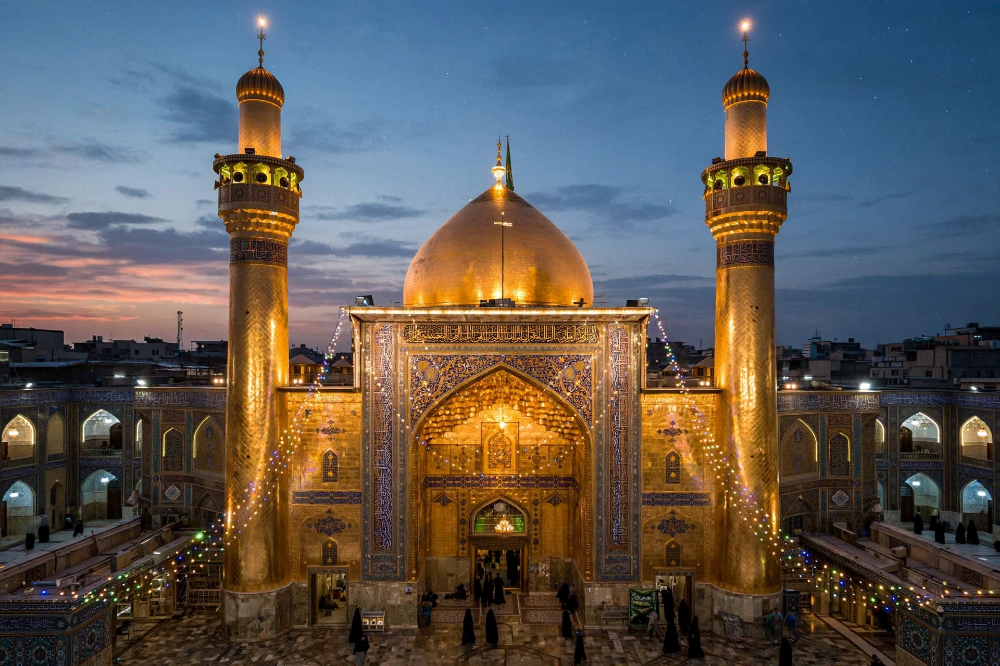

From Wikipedia, the free encyclopedia
| Najaf | |
| Country | Iraq |
|---|---|
| Governorate | Najaf Governorate |
| Elevation | 60 m (200 ft) |
| Population | c. 1 million (metropolitan area, estimates vary) |
| Significance | Burial place of Imam Ali; major centre of Shia scholarship (hawza) |

Najaf (Arabic: ٱلنَّجَف, an-Najaf), also known as Najaf al-Ashraf, is a city in central Iraq, about 160 km (100 mi) south of Baghdad. It is the capital of Najaf Governorate and one of the holiest cities in Shia Islam: it contains the Imam Ali Mosque and Shrine, the burial place of Ali ibn Abi Talib, cousin and son-in-law of the Prophet Muhammad, first Imam of the Shia and fourth caliph of the Sunnis. Millions of pilgrims visit annually, and the city's seminary (hawza) is among the most important centres of Shia learning in the world.
Tradition holds that Ali's burial place, kept secret at his death in 661 CE, was revealed in the eighth century, and a shrine grew up around it under the Abbasids and later dynasties. The city that developed around the shrine became a magnet for scholars and settlers; the scholar Shaykh Tusi, who settled in Najaf in the 11th century, is credited with founding its hawza, whose system of study — culminating in the rank of mujtahid and the institution of the marja' al-taqlid ("source of emulation") — has trained Shia clergy for a thousand years. Najaf prospered and suffered with the powers that ruled Iraq: it was walled against Wahhabi raids in the early 19th century, played a leading role in Iraq's 1920 revolt against British rule, and endured repression under the Ba'athist regime, when much of its old city was demolished to create the avenues around the shrine.
The Imam Ali Shrine, rebuilt and expanded many times, most splendidly under the Safavids, draws pilgrims year-round; the Arbaeen pilgrimage, in which many walk from Najaf to nearby Karbala, is among the largest religious gatherings in the world. Adjoining the city is Wadi-us-Salaam ("Valley of Peace"), often called the largest cemetery in the world, where tradition holds prophets and countless believers are buried — burial there is deeply coveted by Shia Muslims worldwide. The Grand Ayatollah Ali al-Sistani, the pre-eminent Shia marja', resides in Najaf, giving the city — and its quietist scholarly tradition — worldwide influence.
After the 2003 invasion of Iraq, Najaf was a centre of the Mahdi Army uprising of 2004, during which heavy fighting damaged parts of the old city and shrine district before a ceasefire associated with Ayatollah Sistani's return ended the crisis. Since then the city has expanded rapidly as a pilgrimage and commercial hub, served by Al Najaf International Airport.